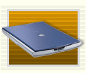

| video |
| home page |
|  | The Tracenoizerengine retrieves searchresults with a users name from several Searchengines and tries to evaluate its meaning. Finally the system gathers the ten most important keywords and creates a htmlpage with content related to each. The whole sites are being put together to a personal Homepage from that particular user and uploaded to a Freeaccount. New clones were periodically created by taking the extracted keywords from the last run. The effect sets in, when the initial and userrelated content shifts more and more to topics which don't belong nescessarily to the user. |
| The Tracenoizerengine retrieves searchresults with a users name from several Searchengines and tries to evaluate its meaning. Finally the system gathers the ten most important keywords and creates a htmlpage with content related to each. The whole sites are being put together to a personal Homepage from that particular user and uploaded to a Freeaccount. New clones were periodically created by taking the extracted keywords from the last run. The effect sets in, when the initial and userrelated content shifts more and more to topics which don't belong nescessarily to the user. |
|